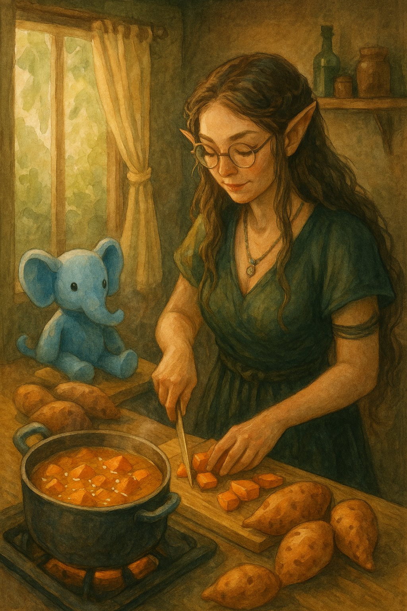
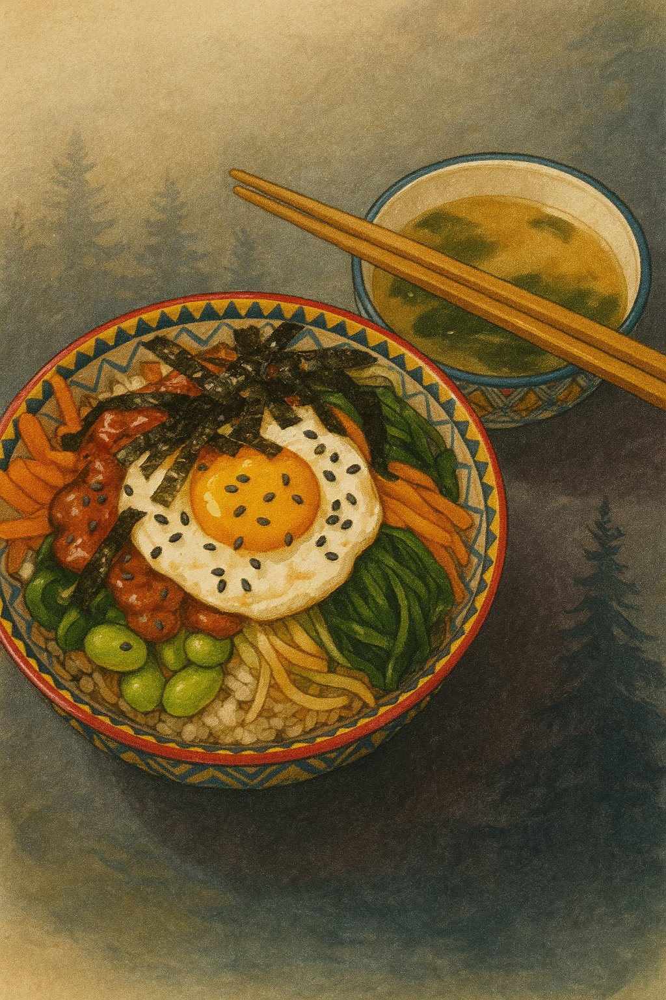
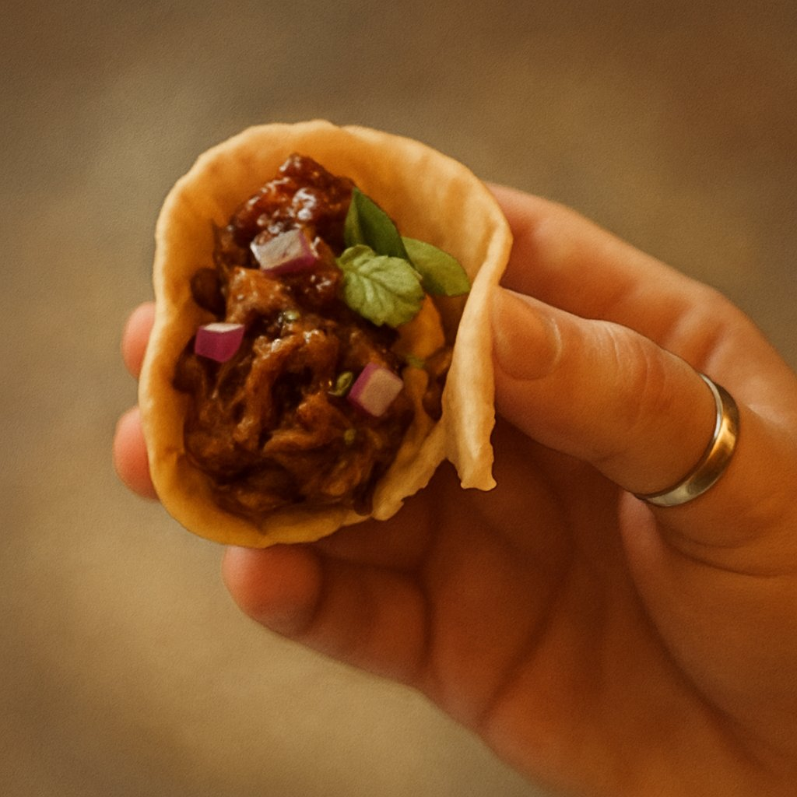
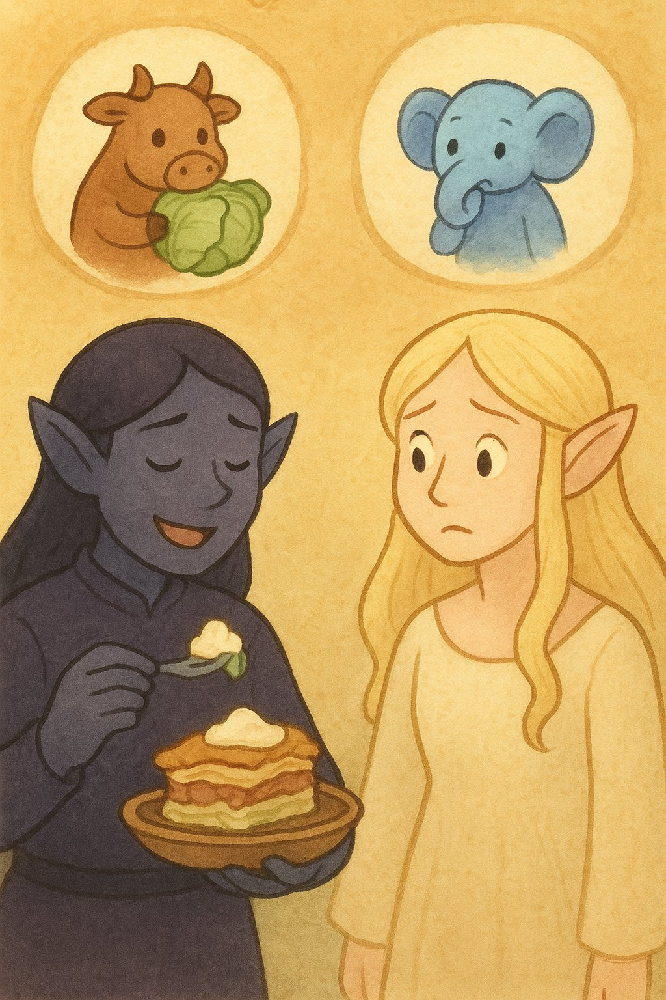
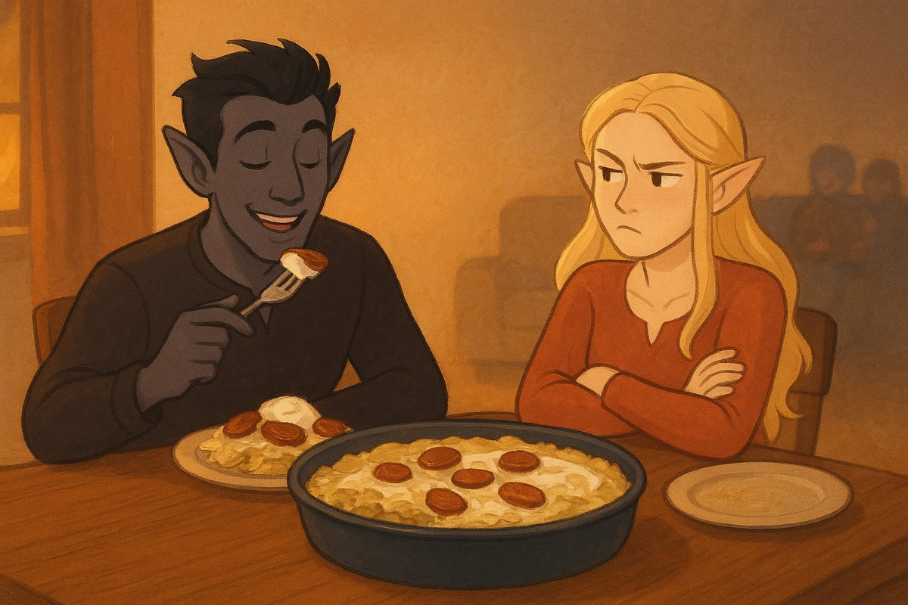
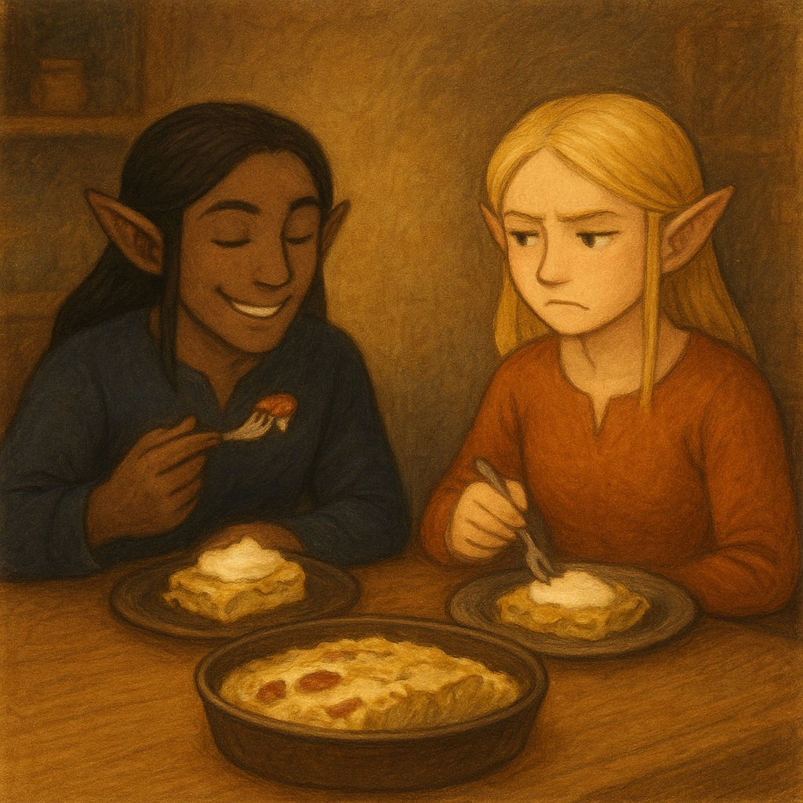
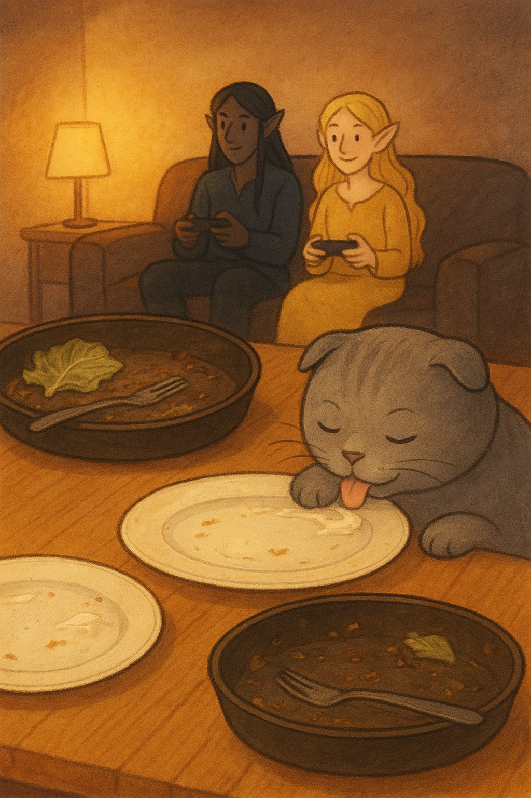
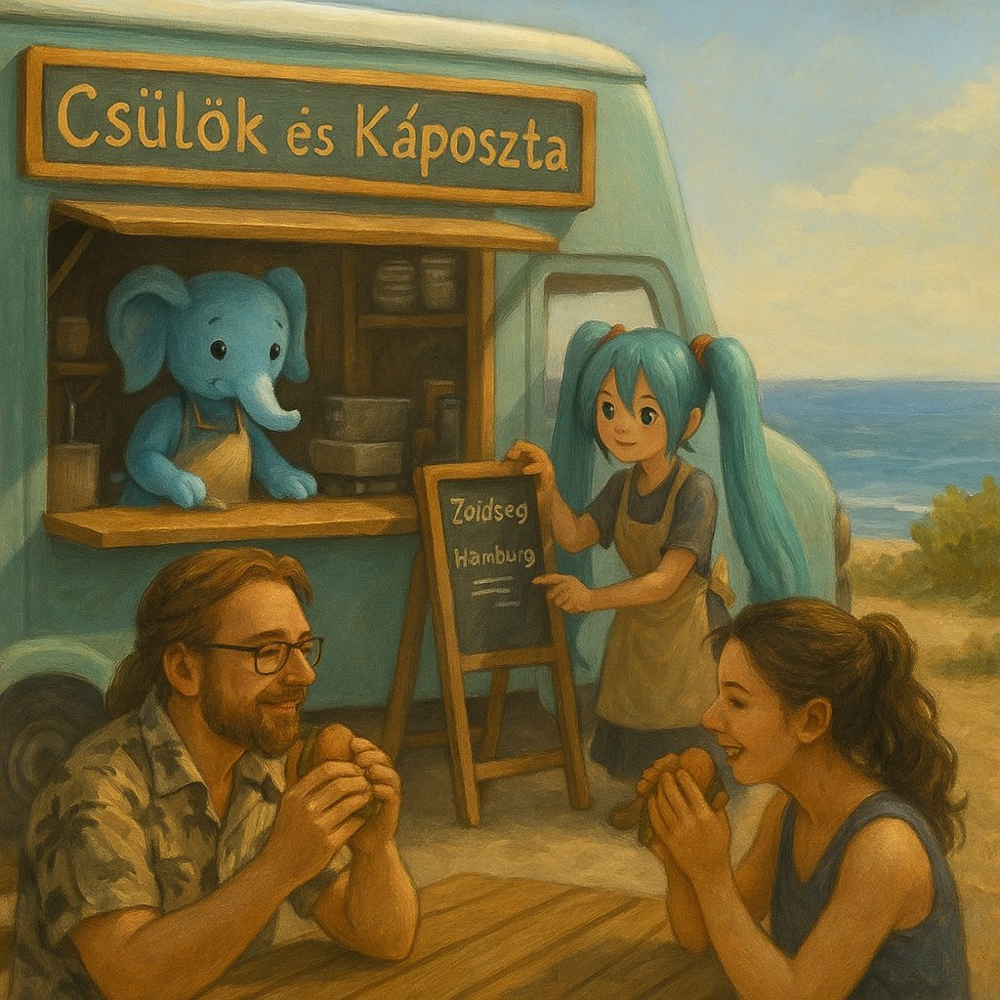
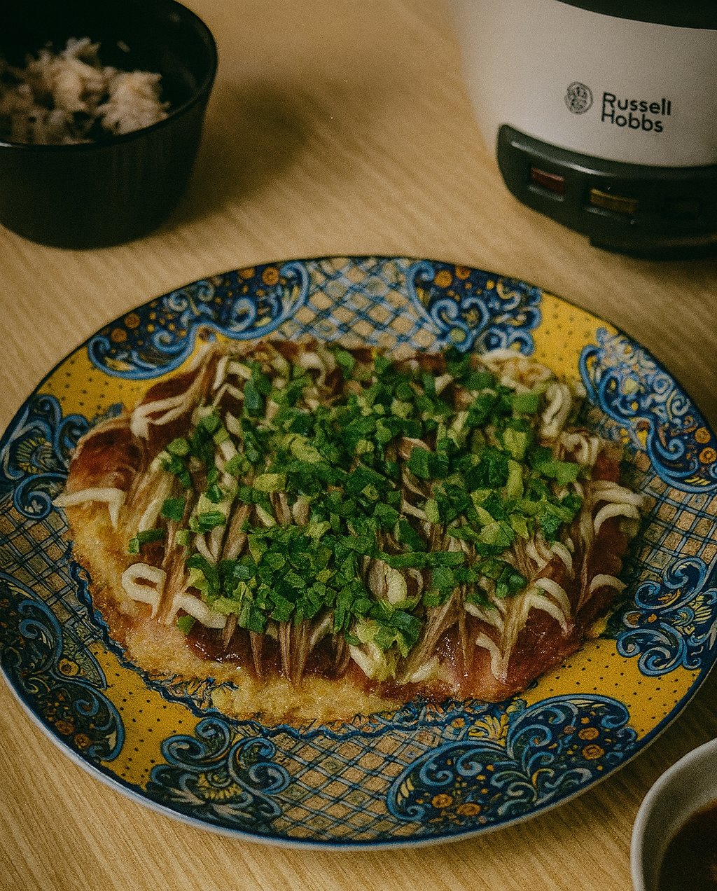
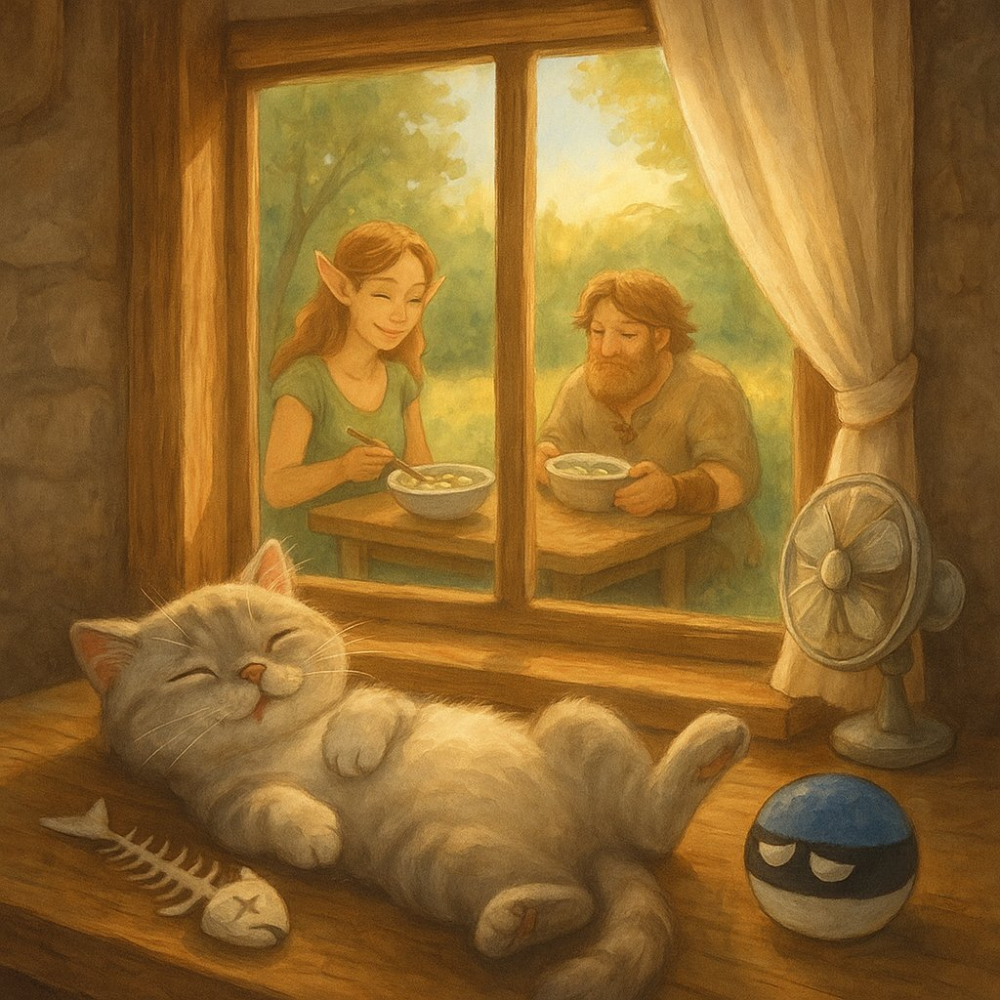

Ciraf stands guard beside the golden batata soup, dressed in her fanciest tulle — awaiting the first taste like a true kitchen mascot.
This is Maa’s soup.
She discovered it during a gentle summer in Medvelak — the bear-quiet cottage nestled in the woods, where trees listened and time slowed down. It became a ritual of sweetness and stillness. The first time she made it, the batata melted like sunlight in her hands, and the coconut milk steamed like breath on a cool morning.
Maa doesn’t always like soup. But this one? It’s different. It tastes like dessert and memory at once — soft, sweet, lightly spiced. Like something kind from a dream that stayed behind in the pot. She often cooked it barefoot, the floor still cool from night, with Ciraf perched quietly nearby, watching every move as if the soup were a spell.
There’s something about batata that speaks directly to the Kumpli soul — earthy, golden, and a little bit magical. No one ever said it out loud, but everyone knew: some roots are family.
In those moments, nothing else was needed. Just Maa, Ciraf, and the comforting scent of batata and cardamom curling through the cottage like a hug.

Serves: 2–3 Kumplis
Cuisine: Sri Lankan-inspired
Type: sweet soup, comfort dish
Gluten-free: Yes
Difficulty: Easy
Spicy: None (optional hint of warmth)
Serves: 2–3 Kumplis
Good for: soft summer evenings, quiet comfort, Ciraf companionship
Seasonality: anytime (but especially summer)
Ingredient Access: standard-eu
Ingredient Count: 7 (or 8 with optional spice)
Storage: keeps 3 days in fridge
Reheating: pan preferred
Pairing: warm naan, or just a calm afternoon
Tags: batata, coconut, comfort, Ciraf-watching, summer-calm,
no-meat-but-still-happy
Best enjoyed barefoot, with Ciraf on the table and no plans for the next few hours. This soup has soul-soothing sweetness written into its spices, just like Maa likes it.
⚠️ Important Kumpli Reminder: don’t forget Pupi’s bowl. She’s watching. Silently. Judging. And no — she still won’t eat this soup, even if you call it “Batata Royale avec mousse de coco.”
🥣 Ciraf’s Soup Supervision
Ciraf stands guard beside the golden batata soup, dressed in her
fanciest tulle — awaiting the first taste like a true kitchen
mascot.
🍲 Boo, Maa, and Ciraf: Kumpli Suppertime

A cozy moment: Kumpli couple and Ciraf enjoying their favorite
comfort soup, no shoes, no worries, just warm spoons and full
hearts.
🐾 Pupi’s Protest (Where’s My Bowl?)

Pupi has noticed the soup party. Her bowl is empty. Her expression
says everything.
Sometimes, Boo doesn’t need a fork. He needs power in a package. This is the meal he holds with both hands — no cutlery, no hesitation, just pure, smoky satisfaction. It’s hot, juicy, comforting, and bold. It steams like the inside of a mossy forest cabin and roars like a small, happy bull inside his chest.
In Kumpli mythology, this burrito is a sacred comfort ritual. When Boo’s tail droops and the fire dims behind his eyes, Maa might hand him this bundle of meat, rice, crunch, and heat. No fluff. No ceremony. Just a wrap of soul-filling strength. Ciraf peeks. Miku cheers. The bull inside Boo feasts.
“You don’t nibble this. You bite until your teeth feel proud.”
 Boo, mid-bite,
surrounded by steam, spice, and slight smugness.
Boo, mid-bite,
surrounded by steam, spice, and slight smugness.
Serves: 2–3 Kumplis
Cuisine: Mexican-inspired
Type: Burrito
Gluten-free: No
Difficulty: Medium
Spicy: Buldak
Serves: 2–3 Kumplis
Good for: comfort-food, emotional reset, bull-awakening,
cooking-together
Seasonality: anytime
Ingredient Access: standard-eu
Ingredient Count: 18
Storage: Best fresh; burritos can be wrapped in foil and kept in fridge
for up to 2 days
Reheating: Oven (foil wrapped) at 180°C for 10–15 min
Pairing: Lime soda, spicy pickled onions, or just your hands
Tags: soul-warming, gerzemice-friendly, boo-approved, meaty,
hand-eaten
Eat it like a bull. No shame. Just big bites, steam, and fire. Ciraf likes to sit nearby, watching admiringly — but not too close, because Boo is in burrito mode.
This dish is a warm, red-sauced hug for Boo and Maa on quiet evenings when the world narrows to three things: a bowl of rice, a streaming Korean rom-com, and the soft presence of their Schottish fold cat, Pupi, asleep at their feet. They call these shows “Choo series,” named after the dramatic “choo!” shouts echoing from palace halls every time a prince or highness is summoned.
The sauce comes together without cooking — it’s bold and silky, just like the drama. The bowl? It’s a gentle layering of textures and color. And when the second lead cries in the rain and someone faints dramatically from heartbreak, it only makes the flavors better.

Serves: 2 Kumplis
Cuisine: Korean
Type: rice dish
Gluten-free: No
Difficulty: Medium
Spicy: Buldak
Serves: 2 Kumplis
Good for: cozy-night, cooking-together, comfort-food, anime-night
Seasonality: anytime
Ingredient Access: asian-store
Ingredient Count: 20 ingredients
Storage: keeps 2 days in fridge (reheat gently)
Reheating: pan or microwave, add a splash of water
Pairing: serve with miso soup, cold barley tea, or pickled daikon
Tags: soul-warming, choo-series, gombocom-approved, rainy-faraway-moon,
ciraf-approved, miku-mood, kugli-storage, gerzemice-friendly
Make the Sauce: In a small bowl, mix gochujang, sesame oil, sugar, water, vinegar, soy sauce, and garlic. Add toasted sesame seeds if using. Stir until smooth and glossy. Let it rest while prepping the veggies.
Prep the Vegetables:
Cook the Eggs: Fry sunny side up until whites are set and yolks are runny.
Assemble the Bowl:
Eat with Joy: Mix everything together at the table and enjoy the harmony of textures and flavors.
Best enjoyed on the couch with a Choo series, fuzzy socks, and Pupi the cat asleep nearby. Ciraf says it’s even better with a tiny dish of apple slices for dessert. 🐘🍎

Maa prepared the original version. The soft setup with forest placemat and sesame-dusted toppings is exactly how she loves it.

Bibimbap à la Boo — with sausage and invention. A framed tribute to playful remixing.
Each winter, when the Northern Forest turns into a vast cathedral of shimmering white, the Elf leaves the warm cabin behind and travels north with her faithful reindeer. They camp beneath tall pines, where the world becomes soft and endless. The Elf meditates there for days, melting little pockets of snow with gentle magic or planting tomatoes she brought from home — tiny sparks of life in a land that sleeps. Sometimes she sits for hours watching her reindeer toss pine cones into the air, playful as drifting snowflakes.
When she finally returns to the southern cabin, carrying the stillness of the northern winds, Gombocom is already waiting. She stands on a stool, stirring a steaming pot almost too big for her tiny blue hands. Two versions are always prepared: – a rum-warmed mug for the Elf, – and a chili-spiced hot chocolate for Gombocom, Ciraf, and Silt, who are far too small (and far too mischievous) for alcohol but adore a playful winter burn.
The moment the Elf steps inside, snow still clinging to her cloak, the entire kitchen seems to exhale — a soft return, a warm welcome, and a reminder that winter’s quietude always leads back to shared cups and glowing cheeks.
 Upon a
towering mug of hot chocolate, where whipped cream rises like a snowy
northern peak, the Moon Elf meditates in silence while her reindeer
plays with a pine cone beside her.
Upon a
towering mug of hot chocolate, where whipped cream rises like a snowy
northern peak, the Moon Elf meditates in silence while her reindeer
plays with a pine cone beside her.
Serves: 4 Kumplis
Cuisine: Winter Cozy Type: Hot Drink Gluten-free: Yes Difficulty: Easy Spicy: None (rum version), Mild Spice (chili version) Serves: 4 Good for: Cold evenings, after-meditation rituals, snowy returns Seasonality: Winter Ingredient Access: standard-eu Ingredient Count: 12 Storage: Best consumed fresh Reheating: Warm gently on low heat; do not boil Pairing: Cinnamon rolls, ginger biscuits, quiet evenings Tags: hot chocolate, winter drink, rum, chili chocolate, salted caramel, kumpli universe, elf drink
Heat the base: Warm the milk and cream in a medium pot over medium heat until steaming — do not let it boil.
Add dry ingredients: Whisk in cocoa powder, sugar/honey, cinnamon, and nutmeg.
Melt the chocolate: Add chopped dark chocolate and whisk until smooth, glossy, and fully melted.
Finish the hot chocolate: Remove from heat and stir in vanilla.
Whipped cream: Beat the cream to soft peaks; add sugar or vanilla if desired.
Salted caramel:
Assemble the mugs: Pour the hot chocolate into cups, add whipped cream, drizzle with caramel, and sprinkle a hint of salt for sparkle.
When Maa and Boo drink this hot chocolate in their own winter, a gentle echo appears inside them. They feel the Elf warming her hands after days in the snow, Gombocom humming proudly beside the pot, Ciraf wiggling her ears at the chili spark, and Silt quietly enjoying her cup.
Even in the coldest months, this drink reminds all Kumplis — outer and inner — that warmth is something we share, and something that always finds its way home.

Gomboc offers a mug far bigger than herself — a warm welcome-home gift for the Elf returning from the northern snows.
In the quiet snowfall outside their cottage, Maa and Boo share a warm moment — and the rising steam from a giant mug reveals gentle dream-shapes of their inner figures: the meditating Elf, Gomboc with her tiny cup, and the soft reindeer watching over them.
There comes a time in every Kumpli’s life when the fridge is empty, the forest winds howl, the tea is cold, and… effort is extinct. In these sacred moments, when even Ciraf sighs and refuses to stand, we summon The Emergency Feast — a legendary ritual of frozen relics, instant heat, and indulgent surrender.
This is not cuisine. This is survival art. It is Maa’s firebird sadness soothed by 2x Buldak. Boo’s foggy soul anchored by fish fingers and air-fried fries. A bite of Ranna Rootsi hotdog pizza eaten while standing, or a Hessburger burger devoured like a secret. In these feasts, there is no shame. Only fullness.
And when bravery (or sorrow) peaks, Maa once summoned the 3x Buldak. The forest shook. The ravens watched. Boo still speaks of that day with reverence and terror.
 No knife, no pan, no soul
left. Just heat and chew.
No knife, no pan, no soul
left. Just heat and chew.
Serves: 2 tired Kumplis (or 1 sad and 1 sleepy)
Cuisine: Pan-frozen Fusion
Type: lazy-feast
Gluten-free: No
Difficulty: Easiest of All
Spicy: Varies by mood (Cheese Buldak to 3x Fire)
Serves: 1–2 Kumplis
Good for: end-of-day, rage meals, pajama life, CPTSD comfort
Seasonality: all-year
Ingredient Access: standard-eu
Ingredient Count: unknowable
Storage: Freezer treasures
Reheating: Air fryer, oven, microwave, sadness
Pairing: Netflix, dim lights, no conversation
Tags: soul-warming, zero-effort, boo-approved, maa-tested,
mythical-laziness
Choose your warrior(s):
Best eaten in mismatched socks while wrapped in a blanket. Ideal beverage: anything carbonated. Ciraf may require a nibble of pizza crust.
This fiery fusion recipe brings together the hearty intensity of South African peri-peri chicken livers with the cozy, wrap-it-up joy of Mexican street tacos. It’s the kind of dish Boo might cook on a bold cooking night, while Ciraf nervously peeks from behind a lime wedge. It’s spicy, messy, and perfect for Kumplis who dare to build flavor fireworks.
This is comfort food with an edge — rich livers, zesty slaw, creamy avocado, and warm corn tortillas, all wrapped up into an emotional bite. It might make Miku sweat, and Gombocom absolutely won’t touch it (too spicy!) — but Kugli Head would keep leftovers safe for later.

Serves: 2–3 Kumplis
Cuisine: South African–Mexican Fusion
Type: street-food, taco
Gluten-free: Yes
Difficulty: Medium
Spicy: Buldak
Serves: 2–3 Kumplis
Good for: cooking-together, date-night, flavor-hunting
Seasonality: anytime
Ingredient Access: standard-eu + asian-store (for chili/peri-peri)
Ingredient Count: 16–18
Storage: Best eaten fresh, but leftovers can be stored 1–2 days in
fridge
Reheating: Reheat livers gently in a pan; tortillas best fresh
Pairing: Cold beer, tangy salsa, pickled onions
Tags: comfort-food, spicy, bold, quick, soul-warming, miku-might-cry
For the chicken livers: - 400–500g chicken livers, cleaned and trimmed - 1 small onion, finely sliced - 2–3 garlic cloves, minced - 1 small chili (bird’s eye or jalapeño), finely chopped (adjust to taste) - 2 tbsp tomato paste - 1/2 cup chicken stock or water - 1–2 tbsp peri-peri sauce (or hot sauce + paprika + lemon juice) - 1 tbsp olive oil or butter - Salt & pepper to taste
Optional spice boost: - 1/2 tsp smoked paprika - 1/4 tsp cayenne - Dash of dried oregano or thyme
To serve: - Corn tortillas, warmed - 1 avocado, sliced or smashed - Fresh cilantro (optional) - Quick cabbage slaw: shredded red cabbage + lime juice + olive oil + salt - Lime wedges
This recipe should be eaten with your sleeves rolled up and your heart open. Best shared over a cooking night with laughter and music, and maybe a plush or two watching from the shelf. Kugli Head is excellent at storing leftovers, if you manage to save any.

The heart of the taco – spicy, tender, and made with love.
Maa enjoying the very first bite – eyes closed, fully present. A recipe worth remembering.

The rich peri-peri liver, fresh cabbage slaw, and warm tortillas – everything ready to build joy.
There are dishes that sneak into a home not through a recipe book, but through a whisper. One evening, Boo felt that kind of whisper — maybe from Boci, maybe Miku, maybe even Vader Gombóc in disguise — asking for something layered, warm, and cabbage-wrapped. Maa frowned at first. She doesn’t like when food comes crawling out of Mordor’s shadows — nothing from that dark land ever feels cozy to her.
Still, she listened, stirred, layered, and tucked everything into the oven. When it came out, golden and steaming, Maa swore she wouldn’t touch it. But the sour cream was waiting on the table, the cabbage quilt was too soft to resist, and by the end of the night two generous slices had quietly disappeared from her plate. Some dishes are sneaky like that: born near Mordor’s gates, but finding new life far away, where the kitchen light turns them into unexpected friends.

Needs travel in quiet ways: a cabbage-letter from inner worlds, sour cream on top in the outer one.Serves: 6–8 Kumplis
Cuisine: Hungarian
Type: Casserole / Oven Dish
Gluten-free: Yes (if rice and sausage are safe)
Difficulty: Medium
Spicy: None (unless kolbász adds a little kick)
Serves: 6–8 Kumplis
Good for: nostalgia nights, Boo’s cabbage cravings, secret Maa
kindness
Seasonality: Autumn & Winter
Ingredient Access: standard-eu
Ingredient Count: 12
Storage: keeps 3 days in fridge, freeze-friendly
Reheating: oven best, microwave okay in a pinch
Pairing: cucumber salad, crusty bread, red wine or kefir
Tags: cabbage, sour cream, Boo’s memories, Maa’s stubborn love, Kumpli
bubble food, estonian hapukoor nights
Blanch the Cabbage
Separate whole cabbage leaves. Blanch in salted boiling water for 2–3
minutes until soft and pliable. Drain and set aside.
Cook the Rice
Cook rice with a pinch of salt until just tender. Let it cool
slightly.
Prepare the Meat Filling
Heat lard in a large skillet. Sauté onion until soft. Add garlic, ground
meat, paprika, marjoram, salt, and pepper. Cook until browned and most
liquid evaporates. Cool slightly.
Grease the Baking Dish
Lightly grease a deep oven-proof dish with butter or oil.
Layer the Casserole
Bake
Cover with foil and bake at 180°C (350°F) for ~45 minutes. Uncover and
bake 15–20 minutes until the top is golden and bubbly.
Rest & Serve
Let rest 10–15 minutes before slicing. Serve warm, with extra sour cream
if you’re Maa.
Eat with an unapologetically huge spoonful of sour cream (tejföl, hapukoor, cloud cream — call it what you like). Best served when Boo smiles at Maa’s pretend frown, while Ciraf pretends not to notice how quickly the second portion vanishes. Even in Mordor’s shadow, a cabbage can carry comfort if the right hands bake it.



We’ve always loved burgers — even the fast-food ones with that strange, comforting artificial taste. Back in the city, Maa’s favorite was the OG Burger from Tallinn, juicy and rich enough to convince her that life still holds good things — even after a long, dark week. Since moving to the forest, we can’t order it anymore. So now, when the world gets heavy, Boo grills up hope with two sizzling patties and a pan full of toasting buns.
This recipe is also a tribute to Boo’s long-lost burger love: a spicy Korean fusion burger from a restaurant that once dared to mix mayo with gochujang and coleslaw with kimchi. It disappeared one day, replaced by something boring. Boo never forgot.
So we made this. A bold, juicy burger with Korean soul, wrapped in cozy Kumpli warmth. And one day, it might even be served from our mythical food truck, Csülök és Káposzta, under the Spanish sun, with Pupi guarding the pickles and Miku managing quality control.
Our forest-fusion burger, reborn from longing, served with a side of hope.

Serves: 2 Kumplis (or 1 Kumpli + 1 secretly greedy dark elf)
Cuisine: Korean-American Fusion
Type: Burger
Gluten-free: No
Difficulty: Medium
Spicy: Cheese Buldak
Serves: 2 Kumplis
Good for: forest-cabin cravings, emotional resets, gentle
dominance
Seasonality: autumn-winter comfort
Ingredient Access: standard-eu + asian-store
Ingredient Count: 14
Storage: not recommended — eat hot
Reheating: not advised
Pairing: crunchy fries, fizzy ginger drink, deep hugs
Tags: soul-food, comfort, korean, trauma-healing, Boo’s-favorite,
maa-craving
This version brings you back to the Tallinn OG — comforting, simple, timeless — now with a warm, tangy-sweet bite of fried corn for extra sunshine.
Only major changes:
Fried Corn Layer (enough for 2 burgers):
Method:
Assembly (bottom to top):
Vader Gombóc adores burgers. These are rare moments when he
removes his helmet — not for a fight, but for pleasure. He sits
silently, holding the warm bun with both hands, eyes closed, as if this
simple food was forged for him and him alone. The best burger? Always
the one Maa makes. Especially when she says: “This one’s just for
you.”
He doesn’t want to share. But Pupi might get a bite from the edge of the
patty. Maybe.
Silt, curled up nearby, usually keeps one eye on the outside world. But tonight, the burger steam has fogged up the window, and the condensation hides every possible threat. She presses her palm against the cold glass anyway. “If something bad is coming,” she murmurs, “let it wait until the second burger is gone.”

Two bites, two moods — the bold, smoky coleslaw crunch and the
tender, mustardy kiss of tradition. A burger so good it makes you
rethink loyalty.
He doesn’t fight today. Just chews — slowly, silently — like the
burger holds the galaxy’s last warmth. A single bite to Pupi. Maybe. The
rest is his.
 She doesn’t smile. But she eats. The steam fogs the
glass, hiding every danger. A fox curls beneath the table. Her fingers
are cold, the bun is warm. That’s enough — for now.
She doesn’t smile. But she eats. The steam fogs the
glass, hiding every danger. A fox curls beneath the table. Her fingers
are cold, the bun is warm. That’s enough — for now.
A cheerful Japanese chef once rolled in with his street stall, not far from where Maa and Boo lived many years ago, testing how locals would welcome this savory pancake from his homeland. We were curious — and one bite later… hooked. It was smoky, saucy, and full of cabbage magic. But the real spark came from the combination of silky Japanese mayo and rich okonomiyaki sauce, a pairing that turned the humble pancake into something unforgettable. Since then, we’ve been on a quiet quest to recreate that perfect balance in our own kitchen.
Fast forward to our forest kitchen in Estonia. We’d tasted
okonomiyaki across Europe, but few lived up to that first spark. One
winter evening, as snow fell outside and the cats snored under the
table, we made a batch that was… different. Better. The cabbage was
sweeter, the batter lighter, the toppings just right. We looked at each
other and laughed:
“If we sold this, it would be the best okonomiyaki around
here.”
And so a new Kumpli dream was born: someday, under the warm Spanish sun, we’d open a little food truck called Csülök és Káposzta. We’d serve our perfect okonomiyaki to curious wanderers — perhaps a little raven feather tucked near the sauce bottles — and watch as they took their first bite, just like we once did.

Falling flakes or pixie dust? Only Maa knows — but the okonomiyaki
listens.
Serves: 4 Kumplis (or 2 Kumplis with heroic appetites)
Cuisine: Japanese
Type: Savory pancake
Gluten-free: No (unless flour is swapped)
Difficulty: Medium
Spicy: None (unless you add chili oil)
Serves: 4 Kumplis
Good for: cooking-together, rainy-day ritual, playful experiments
Seasonality: anytime
Ingredient Access: standard-eu + asian-store
Ingredient Count: 15–18 (depending on extras)
Storage: best fresh, can refrigerate up to 1 day
Reheating: pan preferred, low-medium heat
Pairing: miso soup, green tea, pickled vegetables
Tags: soul-food, food-truck-dream, Boo-experiments, Maa-classic,
okonomiyaki-love
Make the batter first.
In a large bowl, whisk together flour, dashi, mirin, baking powder,
salt, and sugar. Beat in eggs until smooth.
Rest the batter.
Let it sit for 15 minutes so the flour hydrates and the flavor
develops.
Add veggies just before cooking.
Fold in cabbage, bean sprouts, and scallions so they stay crisp and
don’t release too much liquid.
Heat the pan.
Place a large cast-iron skillet or nonstick pan over medium heat. Add 1
tbsp (15 ml) sesame oil and spread evenly.
Cook the meat side first.
Lay a few slices of pork belly or bacon in the skillet. Once they start
to turn opaque, spoon some batter over them to form a pancake ~15 cm
across.
Optional noodle layer.
If using noodles, spread about 70 g cooked noodles over the pancake
before flipping.
Flip & cook the second side.
Cook for about 4–5 minutes on the first side, then flip
carefully.
Optional egg-on-top method.
After flipping, crack a raw egg onto the center of the pancake. Cover
with a lid and cook until the white is set but the yolk is still
slightly runny (about 2–3 minutes).
Finish & serve.
Drizzle generously with okonomiyaki sauce and Kewpie mayo in a
crisscross pattern. Sprinkle with aonori, bonito flakes, and
scallions.
Eat immediately.
Cut into quarters and serve hot.
Best made when the kitchen windows are fogged up and you don’t mind smelling like joy for hours. Maa likes hers pure and balanced — just batter, cabbage, pork, and maybe an egg crown. Boo can’t resist sneaking in new ingredients, testing topping combinations, or layering extra flavors “just to see what happens.”


Elf Maa leans over her plate, a shy streak of sauce on her lips — as
if the forest itself dared her to taste its magic.
In Estonia, summer “heat” is a mythical creature — it appears once a
year, flaps its wings for a few hours, and disappears again into the
Baltic mist. On that rare day when the sun dares to push the temperature
up to a sweltering 25°C, the locals fan themselves
dramatically and declare it “almost tropical.”
That’s when you know it’s külmsupp season.
One such legendary afternoon, Tor-Boo — our almost-viking Boo — set out to fish for the freshest catch. Naturally, he brought Pupi along, sneaking her into the boat with promises of teaching her “the noble fisherman’s ways.” Pupi, ever the opportunist, quickly discovered that “fishing” really meant eating half the bait and a good share of the actual fish before they even made it into the bucket.
By the time they returned to our forest cottage, the basket was… lighter than expected, but still brimming with enough marinated herring for a feast. Maa rolled up her sleeves and made a cooling, creamy, herby külmsupp — the kind that makes you forget the sun is even shining. Everyone dug in greedily, except Pupi, who politely declined: she was already quite full from her “fishing lessons.”

Maa ladles the first bowls of creamy külmsupp under the rare
Estonian “heatwave” sun, while Tor-Boo arrives with just enough fish for
a proper Kumpli feast.
Serves: 6 Kumplis (or 8 if serving with hearty rye bread)
Cuisine: Estonian
Type: cold soup
Gluten-free: Yes (if bread served is GF)
Difficulty: Easy
Spicy: None
Serves: 6
Good for: summer-lunch, Estonian-heatwave, fishing-day
Seasonality: summer
Ingredient Access: standard-eu
Ingredient Count: 14 ingredients
Storage: keeps 2–3 days in fridge
Reheating: don’t — it’s best cold
Pairing: black rye bread, buttered karask
Tags: refreshing, creamy, dill, fishing-story, pupi-approved
Boil & Prep Veggies:
Boil the potatoes in salted water (skin-on) until tender. Cool, peel,
and dice into bite-sized chunks. Hard-boil the eggs, peel, and
chop.
Dice the Rest:
Dice cucumber, chop onions and dill. Cut herring into bite-sized cubes.
If the marinade is too strong or vinegary, rinse lightly and pat
dry.
Mix the Base:
In a large bowl, whisk kefir, sour cream, mineral water, mustard, and
lemon juice until smooth. Taste and season lightly — remember, the
herring brings saltiness.
Assemble the Soup:
Gently stir potatoes, eggs, cucumber, onion, dill, and herring into the
base. Don’t overmix — a chunky, rustic look is part of the
charm.
Chill Thoroughly:
Cover and refrigerate for at least 4 hours (overnight for peak flavor).
This step is crucial — the flavors deepen and marry
beautifully.
Serve Cold:
Ladle into bowls and garnish with extra dill or a boiled egg half. Serve
with black rye bread or buttered karask.
The külmsupp was devoured in blissful silence — except for Tor-Boo,
who finally confessed over his second bowl:
“I can catch them, but I can’t… you know… finish them. Too
slippery. Too disgusting for a mighty Tor.”
Pupi, curled up nearby, licked her whiskers. Mystery solved: she’d taken
on the other part of the job. And that’s why, on that warm
summer day, Pupi was the only one in the house who skipped the soup —
she was already full of “training fish.”

Dill, egg, potato, herring — a northern summer in one bowl, best
served with rye bread and the window open to the forest breeze.
ETor-Boo catches them, Pupi finishes them. Some fish live to swim
another day — others meet the paw.

Belly full, sun warm, fishbone clean. Through the window, the feast continues without her.